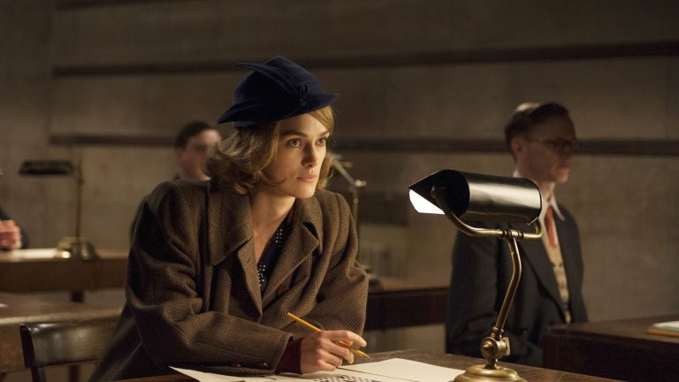

Foi uma criptoanalista e numismatista britânica, conhecida por seu trabalho na Segunda Guerra Mundial, quebrando códigos inimigos na instalação de Bletchley Park. Teve importante papel no Projeto Enigma, que decodificou as comunicações secretas da Alemanha Nazista, trabalho pelo qual foi indicada como membro da Ordem do Império Britânico.(Londres, 24 de junho de 1917 – Oxford, 4 de setembro de 1996)
Na ficção, Joan foi retratada pela atriz Keira Knightley no filme “O jogo da imitação”. Assim como no filme, Clarke e Turing criaram um vínculo muito próximo enquanto conviviam juntos em Bletchley Park e conforme descobriram interesses em comum, como xadrez e botânica. Foram noivos durante alguns meses, pois logo Turing revelou sua homossexualidade a ela, mas mantiveram a amizade até a morte dele [2]. Para muitas pessoas, o brilhantismo de Joan Clarke só se tornou conhecido através do filme, apesar do que seu importante papel representa na computação: a atuação feminina na área e os obstáculos impostos a mulheres decorrentes de sexismo. Por mais importante e incontestável que seja a contribuição de Alan Turing na computação, não apenas na Segunda Guerra Mundial como também na definição formal de ‘computador’ e teoria da computabilidade, o papel de Joan Clarke não pode ser ofuscado e até mesmo reduzido a sua relação com ele.
Durante a Segunda Guerra Mundial (1939-1945), os Aliados estabeleceram o centro de inteligência GC&CS (Government Code and Cypher School) em Bletchley Park, instalação militar secreta localizada em Bletchley (Inglaterra), com o objetivo de decifrar mensagens nazistas interceptadas via rádio. Das quase 10000 pessoas que trabalhavam lá, 75% eram mulheres, e a despeito desse número, o destaque de informações acerca de suas grandes contribuições para a queda do nazismo é muito menor quando comparado às equipes de homens que lá atuavam . Uma destas mulheres era a matemática e critpoanalista Joan Elisabeth Lowther Clarke, conhecida como Joan Clarke, nascida em 24 de junho de 1917 em Londres (Inglaterra). Joan foi integrante da GC&CS e atuante na Hut 8, a equipe dedicada a decifrar códigos enviados pelo Kriegsmarine (a marinha nazista), considerados um dos grupos de códigos mais difíceis de serem quebrados em comparação a outros códigos nazistas . Filha caçula de William Kemp Lowther Clarke, padre anglicano, e Dorothy Elisabeth Fulford (informações não disponíveis sobre sua profissão), cresceu juntamente com seus três irmãos e irmã em um ambiente marcado tanto por influência acadêmica como eclesiástica, visto que seu pai e um de seus avós eram membros da Universidade de Cambridge. Além disso, seu pai, seus avós e dois de seus bisavós tinham ordens ministeriais na Igreja Anglicana . Nos anos colegiais, Joan estudou na escola para garotas Dulwich High School, e aos 19 anos, recebeu uma bolsa para cursar Matemática na Newnham College, faculdade destinada a mulheres dentro da Universidade de Cambridge, uma das mais conceituadas e mais antigas universidades do mundo. Os anos letivos de um curso de bacharelado em Cambridge são divididos em duas partes, onde geralmente a primeira é composta de um ano e a segunda é composta de dois anos . Joan foi aprovada nas duas, concluindo o curso em 1939, porém enfrentou seu primeiro obstáculo como mulher na área de exatas: teve o direito de receber o título de bacharela em Matemática negado, pois Cambridge só passou a conferir o grau a mulheres a partir de 1948. Joan ingressou na GC&CS no ano de 1940 a convite de seu orientador, o professor Gordon Welchman, trabalhando no grupo de mulheres conhecido como “The Girls” (no português, “As Meninas”), onde cada uma recebia 2 libras por dia para realizar tarefas administrativas. Pouco tempo depois conquistou seu próprio espaço na Hut 8, local onde conheceu Alan Turing (vide matéria sobre ele publicada em 2016), com quem estreitou laços de amizade. Na Hut 8, Joan tornou-se a única mulher integrante das equipes responsáveis por lidar diretamente com a quebra de códigos enviados por máquinas Enigma. Embora tivesse a mesma posição que seus colegas homens na equipe, nunca recebeu salário equiparado ao deles. A comunicação entre as forças militares nazistas ocorria por meio de mensagens transmitidas por ondas de rádio em código morse. Antes de serem enviadas, as mensagens eram codificadas para que só fossem compreendidas por nazistas, caso fossem interceptadas por membros dos Aliados. A máquina utilizada para essa tarefa era denominada Enigma, criada pelo engenheiro Arthur Scherbius no fim da Primeira Guerra Mundial . Esta máquina era composta por um sistema eletromecânico com um teclado, um conjunto de três rotores contendo as letras do alfabeto e um painel luminoso que, em linhas gerais, funcionava da seguinte maneira: quando a mensagem original era digitada no teclado, o painel luminoso exibia as letras que deveriam aparecer na mensagem cifrada, e quando a mensagem cifrada era digitada, o painel luminoso exibia as letras que compunham a mensagem original. Neste contexto, a atuação de Joan foi crucial para que muitas vidas fossem salvas: a matemática e criptoanalista ajudou no desenvolvimento de mecanismos de aceleração para o Banburismus, o processo desenvolvido por Alan Turing para decodificação das mensagens nazistas. O trabalho de Joan Clarke possibilitou que a quebra dos códigos ocorresse praticamente em tempo real, permitindo que ações militares fossem antecipadas para evitar que navios de tropas inteiros fossem destruídos. Suas contribuições foram reconhecidas em 1947, quando ela então se tornou membro da Ordem do Império Britânico. Após o fim da guerra, Joan ingressou no Government Communications Headquarters (GCHQ), serviço britânico de inteligência dedicado a espionagem e contraespionagem, onde conheceu o tenente-coronel John Kenneth Ronald Murray, com quem se casou em 1952. O casamento ocorreu na Catedral de Chinchester, local onde William Clarke, pai de Joan, morava. John Murray afastou-se temporariamente do GCHQ pouco tempo depois de casar-se com Joan devido a problemas de saúde. Durante esta época, viveram no vilarejo de Crail (Escócia), e foi nesse período que, influenciada por seu marido, Joan mostrou interesse pela ciência numismática (estudo de moedas), área na qual publicou relevantes artigos científicos. Em 1962, John e Joan retornaram para o GCHQ, aposentando-se dos respectivos cargos em que atuavam em 1971 e 1977, respectivamente. Quando John faleceu em 1986, Joan mudou-se para Headington (Inglaterra) e colaborou com o historiador e criptoanalista Sir Harry Hinsley na escrita do apêndice do volume 3, parte 2, do livro British Intelligence in the Second World War. Em Headington também continuou seus estudos em numismática, recebendo o prêmio Sandford Saltus Medal da Sociedade Britânica de Numismática. Faleceu em 1996, e segundo obituário escrito por Lord Stewartby a Sociedade Britânica de Numismática, era uma pessoa reservada e introspectiva, mas muito gentil e querida pelos membros da igreja que frequentava. Segundo Lord Stewartby, Joan vivia em um plano intelectual, sempre muito cuidadosa na forma de se comunicar com as pessoas.